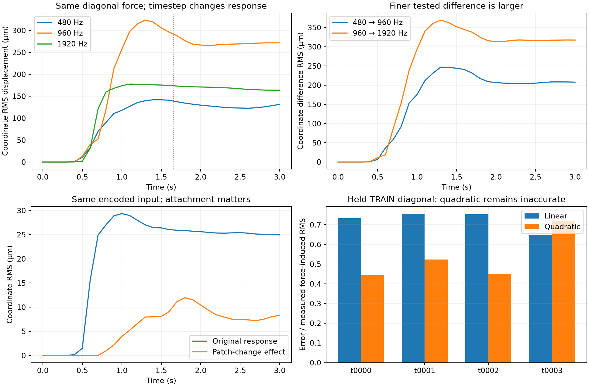

TRAIN diagnostics for the Gaussian boundary recovery campaign. No reserved response was used predictively. These are numerical experiments, not a new inference comparison or continuum-accuracy claim.
The finer tested timestep difference is larger: 181.2 → 275.4 µm coordinate RMSE. Increasing solver iterations also fails to establish convergence; one original-coordinate 128-iteration cell hits the unchanged compression guard. Every failed cell is preserved.

The coordinate comparison is independently replayed with GPUs 0 and 3 swapped: each condition reproduces bitwise, so that assignment does not explain the coordinate difference. Removing the combined intermediate display and capture block leaves the original trajectory bitwise unchanged. Composed sleep/settling settings are zero; this is not independent native-backend verification.
One controlled attachment-patch change preserves the entire encoded25D input yet changes the response by about30% of its RMS amplitude. Known hardware must condition every forward model equally, or remain an explicit nuisance variable. This does not explain all errors or prove a physical cause for nonlinearity.
Full scientific audit, source and test inventory · PDF figure · Manifest
timestep analysis · solver factorial analysis · crossed device comparison · capture backaction analysis · attachment pair analysis · attachment geometry audit · rich force polynomial analysis
The next predeclared experiment isolates the documented external-forces-every-iteration option. It is not declared a fix; numerical acceptance across four support types remains required before physical calibration.